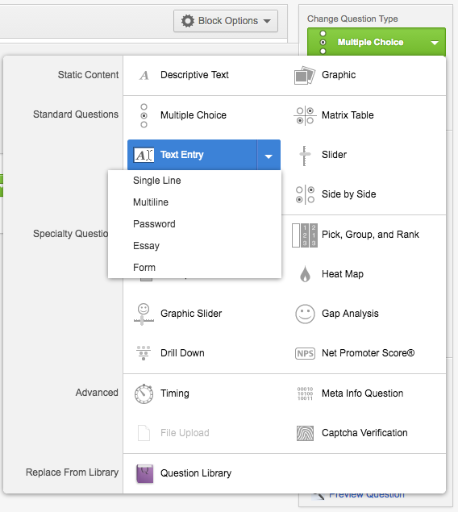
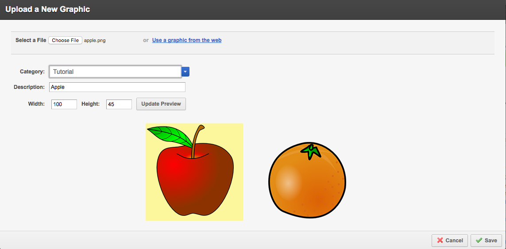
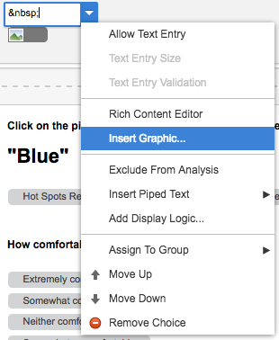

Sample Survey
I've created this sample survey for us to walk through. I've provided all of the files you need to make this study here (right click, and then select "save as"). There are a few features that I built into this survey for us to work on:
auto-generating a numeric code for Turkers to submit with their HIT (and how you actually give that code to the Turkers
text fields with required responses
a picture selection task with text instructions
text response questions (with block randomization) and audio instructions that autoplay (also, restrictions on when you can begin to submit a response)
a sentence completion block where some trials are randomly presented, and some are fixed
There are a few things that we can cover in this meeting, but I hope that you learn a bit about how to do some fairly complex things with this very simple system. First I'll talk about the question types that we're using, and how to do things like add audio, video, and images to your studies. Then, I'll discuss some of the nice functionality features on Qualtrics (see: block randomization, question randomization, embedded data, random code generation). Finally, I'll show you how to get the URL for Turk and how to look at your data. More complicated information will ultimately be located on the Tips & Tricks page.
Question Types
Text Entry
There are several text entry questions in this survey. Let's start with the first question. We'll create a new survey, let's call it "Tutorial Survey", and put it in a new folder, call it "Tutorial". When you open the new survey you get a default question block, you can name this whatever you want, but it is best to give it a name that will be identifiable to you later. We'll start by clicking the "Create a New Question" button.
Click on the green button in the side-bar under "Change Question Type", this should open some options. We want to select "Text Entry" for this question (for the later questions we might want longer text boxes - if you hover over the arrow beside each question type there are more options for that question).

In this section we want to write the instructions for this question.
- We are interested in how people use keywords to describe objects. In this task, you will be asked to use one word to described the highlighted object.
You will be shown a set of images, and the highlighted one is the one you will need to describe.
To edit the style of the text you can click on the button that says "Rich Content Editor". This button will also be helpful for adding the apple image to this question. Next we want to add the picture of the apple and the orange. To do this in the Rich Content Editor click on the button that looks like a little landscape. A window should pop-up ("Insert Graphic"), and we want to select "Upload a new graphic". You'll be prompted to either select a file from your computer or to enter a URL (if you haven't downloaded the files you can use the link to the file on my website here). Once you have selected the file you will be able to preview it, set a category for it (I use this as a sort of file system - which is important if you have similar images in different conditions, e.g., "Mammals E6 Order 1"), give it a description (this is like the file name you will see with the picture), and you can edit the size of the picture (it will keep the aspect ratio for you, and you can preview the new size).

Now we just need to add the final set of instructions, and this question is complete.
- You will then be asked to describe that object in one word.
Let's give it a try!
Write in one word that describes the highlighted object in the text box below.
Page Breaks
Within a block you can determine how many questions are shown on a page, by putting in "page breaks" where you want. In the same sidebar where you can change the question type there is a button to "Add Page Break".
Multiple Choice (with Images)
Just as in the text entry exampe, you can either edit this text just in the question description box, or you can use the Rich Content Editor to make more formatting edits. In this case, the example in this trial is:
- A speaker was asked to describe one of the pictures below with a single word. Click on the picture that you think the speaker was referring to.
"Big"
In the side bar you can see that there are multiple options for the multiple choice question type. You can easily modify the following:
How many options you want to use
Whether you want to use automatic choices (these are things like Disagree - Agree, Clear-Unclear, etc)
The answer type you want - single answer, multiple answer, dropdown, select box, etc
The position of the responses (horizontal or vertical)
Whether you want to require a response before the participant can move on
You can also customize the responses to include images, piped text, etc. or to arrange the location of the response text (above, below, beside, etc). To include an image, click on the dropdown arrow on the response and select "Insert Graphic". Adding an image here is the same as above. However, all MC responses require a text component (I've set it to a single space here, since no text is required for my fish question).

Picture Hotspots
Audio Instructions
Functionality
Required Answers
Randomized Blocks
Randomized Questions in a Block
Looking at the Output
Linking up with MTurk
{kind=link}